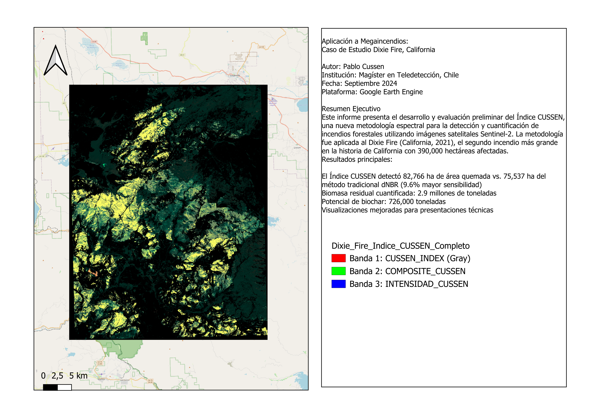

Imagen Satelital del Incendio
Composición en color natural que muestra la extensión del área afectada por el incendio Dixie Fire.

+9.6%
Más Detección que dNBR
2.9M
Toneladas de Biomasa Residual
726k
Toneladas de Potencial Biochar
IA
Índice CUSSEN Ponderado
Resumen Ejecutivo
-
Análisis Avanzado con IA
Se aplicó el Índice CUSSEN (SIC), un algoritmo propio ponderado por IA, para una evaluación precisa de la severidad del incendio.
-
Mayor Precisión que dNBR
El Índice CUSSEN demostró ser superior al detectar un 9.6% más de área quemada en comparación con el método tradicional dNBR.
-
Cuantificación de Biomasa
Se estimaron 2.9 millones de toneladas de biomasa residual post-incendio, un dato clave para la gestión de la recuperación.
-
Potencial de Biochar
La biomasa residual podría convertirse en más de 726,000 toneladas de biochar, un recurso valioso para la enmienda de suelos y el secuestro de carbono.
Metodología y Enfoque
El análisis del incendio Dixie Fire se centró en la aplicación y validación del Super Índice CUSSEN (SIC), una fórmula avanzada y ponderada por Inteligencia Artificial, diseñada para optimizar la detección de la severidad del fuego en bosques de coníferas. A diferencia del índice dNBR (delta Normalized Burn Ratio), que es un estándar en la industria, el SIC integra múltiples bandas espectrales y las pondera según la firma específica de la vegetación post-incendio.
Este enfoque permite una clasificación más precisa y sensible de los niveles de severidad (Baja, Moderada, Alta y Extrema), lo que resulta en una mejor cuantificación de los impactos ecológicos y de la biomasa residual. El modelo de biomasa, basado en el NDVI pre-incendio y ajustado por el nivel de severidad del SIC, proporciona una estimación robusta de la materia orgánica remanente disponible para la producción de biochar.
Estadísticas y Gráficos
Visualización del Índice de Severidad CUSSEN

Esta imagen muestra el índice de severidad del incendio, donde las áreas más oscuras representan una mayor afectación.
Distribución de Severidad (Índice CUSSEN)
Área Detectada (Hectáreas)
Biomasa y Potencial de Biochar (Toneladas)
Biomasa Residual
2,904,098
Potencial de Biochar
726,024
Tabla de Distribución de Severidad
| Severidad | Área (ha) |
|---|---|
| Sin quemar | 69,552.72 |
| Leve | 14,243.10 |
| Moderado | 31,749.01 |
| Severo | 9,388.37 |
| Extremo | 26,334.85 |
Informe Técnico Detallado
Explore el análisis completo, la metodología del innovador Índice CUSSEN y los resultados de cuantificación de biomasa en nuestro informe técnico profesional.